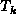
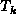

Data Structures and Algorithms
with Object-Oriented Design Patterns in Java
Data Structures and Algorithms
with Object-Oriented Design Patterns in Java
All successful searches terminate when the object of the search is found.
Therefore, all successful searches terminate at an internal node.
In contrast, all unsuccessful searches terminate at an external node.
In terms of the binary tree shown in Figure  ,
a successful search terminates in one of the nodes
which are drawn as a circles
and an unsuccessful search terminates in one of the boxes.
,
a successful search terminates in one of the nodes
which are drawn as a circles
and an unsuccessful search terminates in one of the boxes.
The preceding analysis shows that the average number of nodes visited during a successful search depends on the internal path length , which is simply the sum of the depths of all the internal nodes. Similarly, the average number of nodes visited during an unsuccessful search depends on the external path length , which is the sum of the depths of all the external nodes. Fortunately, there is a simple relationship between the internal path length and the external path length of a binary tree.
Theorem Consider a binary tree T with n internal nodes and an internal path length of I. The external path length of T is given by
In other words, Theorem says that the
difference between the internal path length
and the external path length of a binary tree with n internal nodes
is E-I=2n.
extbfProof (By induction).
Base Case Consider a binary tree with one internal node and internal path length of zero. Such a tree has exactly two empty subtrees immediately below the root and its external path length is two. Therefore, the theorem holds for n=1.
Inductive Hypothesis
Assume that the theorem holds for for some  .
Consider an arbitrary tree, , that has k internal nodes.
According to Theorem , has k+1 external nodes.
Let and be the internal and external path length of ,
respectively,
According to the inductive hypothesis, .
.
Consider an arbitrary tree, , that has k internal nodes.
According to Theorem , has k+1 external nodes.
Let and be the internal and external path length of ,
respectively,
According to the inductive hypothesis, .
Consider what happens when we create a new tree  by removing an external node from
and replacing it with an internal node that has two empty subtrees.
Clearly, the resulting tree has k+1 internal nodes.
Furthermore, suppose the external node we remove is at depth d.
Then the internal path length of
by removing an external node from
and replacing it with an internal node that has two empty subtrees.
Clearly, the resulting tree has k+1 internal nodes.
Furthermore, suppose the external node we remove is at depth d.
Then the internal path length of  is
and the external path length of
is
and the external path length of  is
.
is
.
The difference between the internal path length and the external
path length of  is
is
Therefore, by induction on k,
the difference between the internal path length
and the external path length of a binary tree with n internal nodes is 2n
for all  .
.
Since the difference between the internal and external path lengths of any tree with n internal nodes is 2n, then we can say the same thing about the average internal and external path lengths averaged over all search trees. Therefore, E(n), the average external path length of a binary search tree is given by
A binary search tree with internal n nodes has n+1 external nodes. Thus, the average depth of an external node of a binary search tree with n internal nodes, , is given by
These very nice results are the raison d'être for binary search trees.
What they say is that the average number of nodes visited
during either a successful or an unsuccessful search
in the average binary search tree having
n nodes is  .
We must remember, however,
that these results are premised on the assumption that all
possible search trees of n nodes are equiprobable.
It is important to be aware that in practice
this may not always be the case.
.
We must remember, however,
that these results are premised on the assumption that all
possible search trees of n nodes are equiprobable.
It is important to be aware that in practice
this may not always be the case.
 Copyright © 1998 by Bruno R. Preiss, P.Eng. All rights reserved.
Copyright © 1998 by Bruno R. Preiss, P.Eng. All rights reserved.